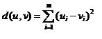
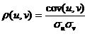
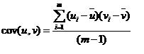
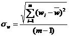
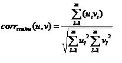
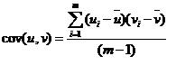
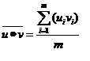
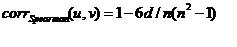
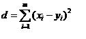

MeV provides eleven distance metrics from the distance menu on the menu bar. While Euclidean Distance and Pearson Correlation are by far the most utilized metrics this appendix summarizes all available metrics. Note that in the following equations u and v are expression vectors of size m.
Euclidean distance is perhaps the most familiar distance metric since it reflects the distance between two objects in space. The definition of Euclidean distance extends to as many dimensions as present in the expression vectors to be compared. Distances can range from 0 to positive infinity.

Manhattan distance (or ‘City-Block’ distance) describes the distance as the sum of the differences of each element pair or dimension. In two dimensions it is like ‘going up one and over three blocks’ to get to a destination in a city where one cannot traverse a block diagonally. Distances can range from 0 to positive infinity.
The Pearson Correlation and other related metrics are very commonly used to evaluate trends of expression over a set of conditions. This metric allows one to group trends or patterns irrespective of their overall level of expression. Two genes having different levels of expression but having ‘parallel’ expression patterns would be considered closely related. Values can vary from -1 to 1. Correlations near 1 indicate a strong positive correlation between the two vectors. Meaning that when one increases the other increases. Values closer to -1 indicate a negative correlation, when one vector has a relative increase in expression, the other vector has decreasing expression.
where
and
This is a variation of the standard Pearson correlation in which the values computed are the standard deviation from zero rather than the mean intensity for that vector. The difference between this metric and the Pearson correlation is partially dependent on how different the mean expression is from zero.
This variant of the Pearson correlation performs Pearson uncentered and then squares the result. Using this metric will cause patterns that are strongly positively and strongly negatively correlated to possibly cluster together. Values for this metric range from 0 to 1.0.
This metric produces values that range from -1 to 1 with values toward 1 indicating a strong positive relationship and values toward -1 indicating a strong negative relationship.
Covariance can produce values which are unbounded. Values are not scaled by factors representing the variance within u and v. Covariance values for vectors with a strong positive relationship should be large and positive. If the two vectors have a strong negative relationship then the covariance will be negative and large. If the two vectors have little relationship then the terms of the summation above tend to vary between positive and negative and the covariance tends toward zero.
Average Dot Product can produce values which are unbounded. This metric has been used to compute similarity between expression vectors which have been normalized such that all elements range in value from 0 to 1 and each vector has a norm of 1.
Spearman’s Rank Correlation, as the name implies, ranks the expression within each vector based on increasing expression level. Each vector in this manner is transformed to reflect the ordering of expression level. If two elements have exactly the same expression then both elements get assigned to the same level falling 0.5 levels above the next lower level. For example an expression vector containing five values (0.3, 1.2, 2.2, 1.1, 1.2) would have a ranking of (1.0, 3.5, 4.0, 2.0, 3.5) . These ranking vectors are then used to compute the distance via:
where
x and y are the ranking vectors corresponding to u and v.
The spearman rank correlation makes no assumptions about the distribution of the data and the magnitude of expression becomes unimportant as ranking of expression level is used to determine the correlation.
Kendall’s Tau is a measure of correlation based on the tendency of the two vectors to vary in the same direction from one element to the next. In the case of gene expression vectors, for each observation of expression, the expression is compared to the previous measurement to determine if it is a relative increase or decrease in expression. If both expression vectors change in the same direction, both increasing or both decreasing, then the metric is incremented. If the expression vectors, for that element, change in expression in opposite directions, then the metric is decremented. The measure is finally scaled by the number of observations. This metric ignores the magnitude of the expression levels but purely looks at inflections in the expression patterns.